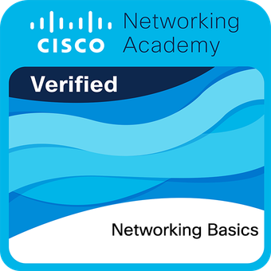

Learning Journey
Certifications

Cisco Networking Basics
Demonstrates understanding of fundamental networking concepts and technologies
View Certificate
Introduction to Cybersecurity
Introductory knowledge of cybersecurity, global implications of cyber threats, and fundamentals of vulnerability and threat detection
View Certificate
Cyber Threat Management
Advanced understanding of cybersecurity policies, governance, and risk management
View CertificateCybersecurity Skills & Knowledge
Threat Management
- Risk Assessment and Management
- Incident Response Procedures
- Network and Server Profiling
- Penetration Testing
- The Cyber Kill Chain
- Diamond Model of Intrusion Analysis
- Security Controls Implementation
- Threat Intelligence Services
Governance & Response
- Cybersecurity Policy Development
- Regulatory Compliance
- Disaster Recovery Planning
- Evidence Handling
- Attack Attribution
- Vulnerability Assessment
- CVSS Implementation
- Secure Device Management